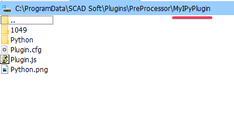

Создание плагина
Начало работы
Каждое пользовательское расширение представляется на диске в виде отдельной папки, структура которой описана ниже:
Папка LANG_ID (папка 1049)
LANG_ID: необязательная папка (используется, если в настройках SCAD++ выбран соответствующий язык, например 1049 – русский, 1033 – английский и т.д., в соответствии с таблицей Microsoft Locale ID Values). Содержит:
Файл Plugin.cfg: необязательный файл, зависимое от языка описание пользовательского расширения.
Папка Python(Не обязательная)
Содержит основные скрипты IronPython:
PyPlugin.py(Обязательный) - Основной файл плагина. Содержащий основную логику выполнения плагина и точки входа плагина.
В папке может содержаться любое количество вспомогательных модулей .py вызываемых из основного файла
Примечание
Необязательно создавать папку Python, папка служит лишь для структурирования файлов.
Возможно размещение файлов .py в корневой папке плагина, так же имя основного файла выбирается пользователем,
это регулируется прописыванием путей к основному файлу .py в Plugin.js
Файл Plugin.cfg:
Обязательный файл, независимое от языка описание пользовательского расширения и путь к иконки плагина
Файл Plugin.js:
Обязательный файл, является точкой входа в PyPlugin.py для выполнения основной логики плагина
Parameters.cfg:
Необязательный, служебный файл. Появляется при записи параметров в файл
Функции и логика в Plugin.js
Является точкой входа PyPlugin.py для выполнения основной логики плагина. Plugin.js
вызывает объект IronPython ScadPython (Описание объекта смотри ниже) для работы с файлами .py.
Так же в нем содержаться 2 точки входа Plugin_ActivateUI(engine) и Plugin_Execute(engine),
каждая из этих функции вызывает аналогичную функцию в основном файле .py run_activateUI(pyScad) и run_execute(pyScad).
Примечание
В случае отсутствия передаваемых параметров от пользователя, функция Plugin_ActivateUI и соответствующая ей функция
run_activateUI() в .py файле могут отсутствовать.
Реализация Plugin.js
//Вызов IronPython для работы с файлами .py
var scad_c = new ActiveXObject("ScadPython");
function Plugin_ActivateUI(engine) {
try {
//путь к основному скрипту .py
//(C:\ProgramData\SCAD Soft\Plugins\PreProcessor\MyIPyPlugin\Python\PyPlugin.py)
var path = engine.GetPluginRootDirectory () + "Python\\PyPlugin.py";
//Вызов функции run_activateUI() в PyPlugin.py
scad_c.RunActivateUI(engine, path);
//Переход к функции Plugin_Execute
engine.Execute();
} catch (e) {
engine.Cancel(e);
}
}
function Plugin_Execute(engine) {
try {
//путь к основному скрипту .py
//(C:\ProgramData\SCAD Soft\Plugins\PreProcessor\MyIPyPlugin\Python\PyPlugin.py)
var path = engine.GetPluginRootDirectory () + "Python\\PyPlugin.py";
//Вызов функции run_execute() в PyPlugin.py
scad_c.RunExecute(engine, path);
} catch (e) {
engine.Cancel(e);
}
}
Функции и логика в PyPlugin.py
Основной скрипт выполнения логики плагина. Содержать функции:
run_activateUI(pyScad)- (если она существует) сосредоточено все интерактивное взаимодействие пользовательского расширения и пользователя программы.run_execute(pyScad)- функция выполнения основной логики плагина
Примечание
Имя основного файла
<MyNamePyPlugin>.pyможет быть заданно пользователем т.к. передача основного файла .py проходит по заданному пути вPlugin.jsВ случае отсутствия передаваемых параметров от пользователя, функция
run_activateUIв .py файле может отсутствовать.
Реализация PyPlugin.py
#Установка необходимых путей для поиска модулей и файлов
import sys
import os
#Путь к директории Plugins (по стандарту C:\ProgramData\SCAD Soft\Plugins)
pluginDirPath = os.path.abspath(os.path.join(os.path.dirname( __file__ ), '../../..'))
#Путь к основной библиотеке - scad_py
sys.path.append(pluginDirPath)
#Дополнительные модули
sys.path.append(pluginDirPath + "\\PreProcessor\\MyIPyPlugin\\Python")
#Возможен импорт сторонних/собственных библиотек в виде .dll
#Импорт библиотек .dll
import clr
#Импорт созданной библиотеки
clr.AddReferenceToFileAndPath("MySomeLib.dll")
#Импорт класса содержащийся в библиотеке
from MySomeLib import MyClass
#Импорт библиотеки scad_py
from pyscad_lib.pyscad import Engine
#Импорт вспомогательных библиотек
import json
def run_activateUI(pyScad):
engineScad = Engine(pyScad)
#TO DO
#Логика работы с пользовательским интерфейсом
#...
def run_execute(pyScad):
engineScad = Engine(pyScad)
editor = engineScad.get_editor()
model = engineScad.get_model()
try:
#TO DO
#Основная логика плагина
#...
except:
raise
Объект IronPython - ScadPython
Объект IronPython предназначен для вызова файлов .py, объект вызывается из Plugin.js.
Содержит две функции:
1. ScadPython.RunActivateUI(engine, path, silenceMod = true)
Вызывает у файла по пути path функцию run_activateUI(pyScad).
Аргументы:
engine - основной объект SCAD++.
path - полный путь к основному файлу .py (в данном случае к
PyPlugin.py)silenceMod - маркер включения и выключение тихого режима. По умолчанию включен. Выключение тихого режима вызывает сообщение о начале и окончании работы скрипта.
2. ScadPython.RunExecute(engine, path, silenceMod = true)
Вызывает у файла по пути path функцию run_execute(pyScad).
Аргументы:
engine - основной объект SCAD++.
path - полный путь к основному файлу .py (в данном случае к
PyPlugin.py)silenceMod - маркер включения и выключение тихого режима. По умолчанию включен. Выключение тихого режима вызывает сообщение о начале и окончании работы скрипта.